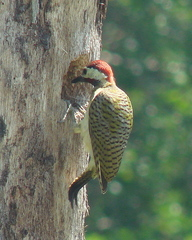
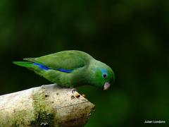
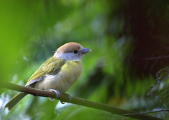

Carpintero habado
1
Melanerpes rubricapillus

Carpintero buchipecoso
1
Carpintero buchipecoso
1
Colaptes punctigula
Lora cabeciamarilla
2
Amazona ochrocephala

Perico de anteojos
3
Perico de anteojos
3
Forpus conspicillatus
Periquito Alas Amarillas
4
Brotogeris jugularis
Tortolita Canela
5
Columbina talpacoti
Buitre americano cabecirrojo
6
Cathartes aura
Zopilote común
7
Coragyps atratus
Chimachimá
8
Milvago chimachima
Ermitaño verde
9
Phaethornis guy
Colibrí Cola Canela
10
Amazilia tzacatl
Mango Gorginegro
5
Anthracothorax nigricollis
Aguililla caminera
5
Rupornis magnirostris
Aguililla cola corta
11
Buteo brachyurus
Golondrina Albiazul
9
Pygochelidon cyanoleuca
Tordo Sudamericano
12
Molothrus bonariensis
Turpial amarillo
1
Icterus nigrogularis
.jpg)
Zanate caribeño
13
Quiscalus lugubris
Batará carcajada
14
Thamnophilus multistriatus
Cucarachero bicolor
15
Campylorhynchus griseus
Saltapared Común
9
Troglodytes aedon
Zorzal sabiá
5
Turdus leucomelas
Papamoscas Rayado Cheje
18
Myiodynastes maculatus
Mosquero cardenal
19
Pyrocephalus rubinus
Mosquerito Ojos Blancos
9
Tolmomyias sulphurescens
Luis pico grueso
20
Megarynchus pitangua
Tirano Pirirí
21
Tyrannus melancholicus
Tirano Tijereta Gris
5
Tyrannus savana
Bienteveo alicastaño
22
Myiozetetes cayanensis
Bienteveo común
5
Pitangus sulphuratus
Mosquerito Espatulilla Común
9
Todirostrum cinereum
Sirirí bueyero
5
Machetornis rixosa
Papamoscas Rayado Chico
23
Legatus leucophaius

Vireón Cejas Canela
5